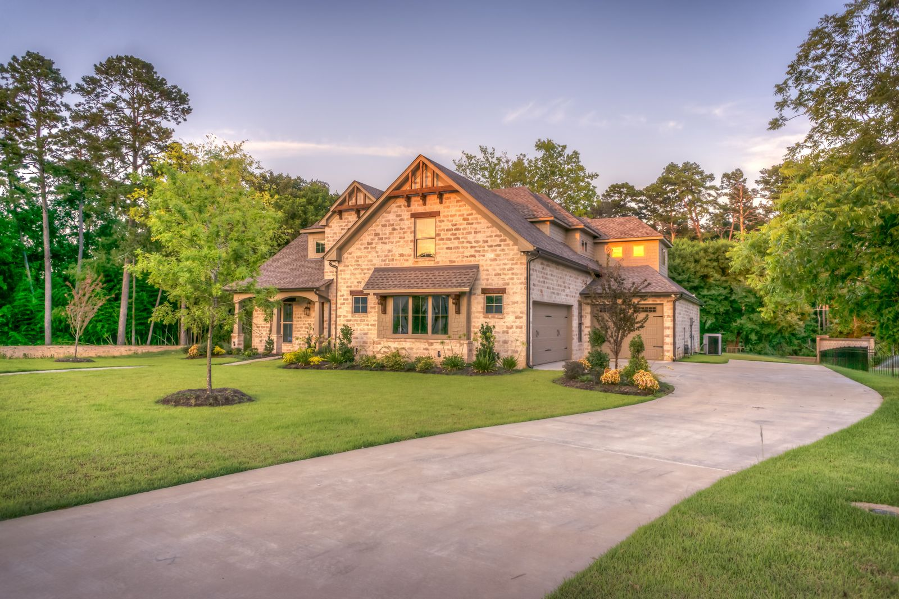

Shingle roofs
Tear-off and a new shingle roof when the field is worn through, or a repair when the damage is local. We name the underlayment and the ridge detail in the quote.
Concept site by Michael Goss Imaging. Not a real business.

Roofing contractor
Thistle & Ridge repairs and replaces shingle roofs, flashing, and gutters for houses on the ridge streets and the older blocks nearby.
Ask for a quoteTear-off and a new shingle roof when the field is worn through, or a repair when the damage is local. We name the underlayment and the ridge detail in the quote.
Chimneys, sidewalls, and valleys. A leak visit starts at the stain inside, then moves to the metal outside, so we are not guessing from the ground.
Runs that overflow, hang loose, or dump water at the foundation. We reset pitch and replace sections that are crushed.
Porch roofs and small flat sections that need a different membrane than the main shingle field. We treat them as their own scope.
We work on the ridge streets and the older blocks nearby. The yard is at 875 Sample Road. If a roof is outside a reasonable drive, we decline it on the first call.
No. A stain can be one flashing joint. A full replacement is for a roof that is brittle across the field, or for damage that repeats after a proper repair.
We look, we explain what we see, and we leave a written quote if there is work to do. The visit is a look, not a surprise start of construction.
We ask where the truck should sit and where debris can land. Beds that are close to the eaves get covered before tear-off.
Not honestly. Weather, material, and the size of the roof set the date after the quote.
Call, email, or send a note with the address and what you are seeing inside or on the roof.
875 Sample Road